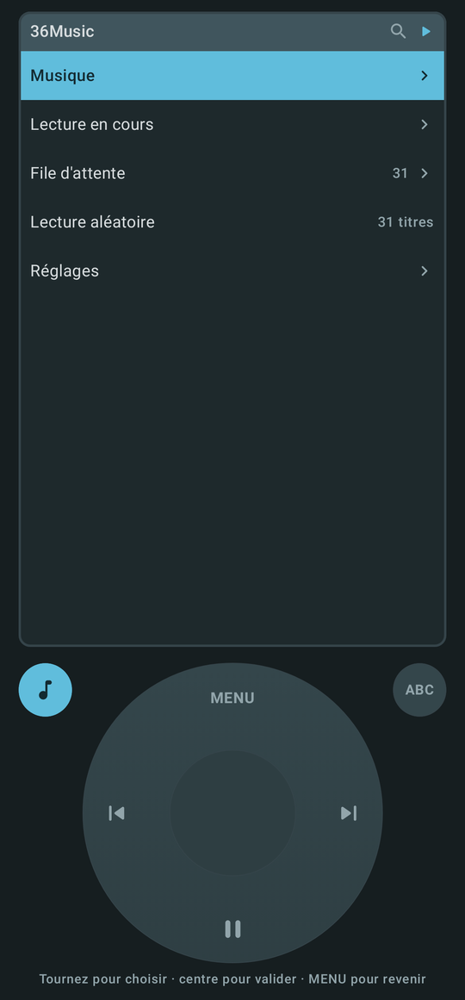
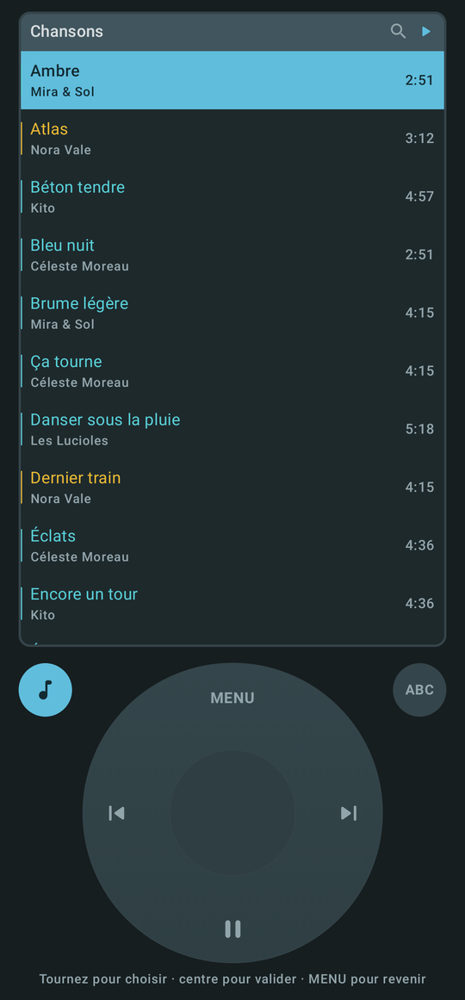
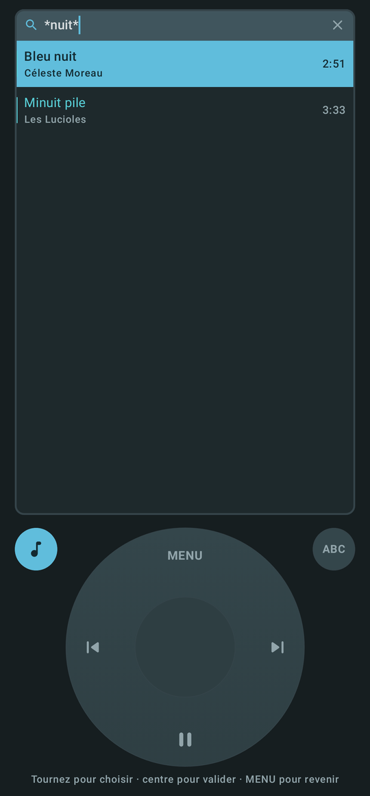
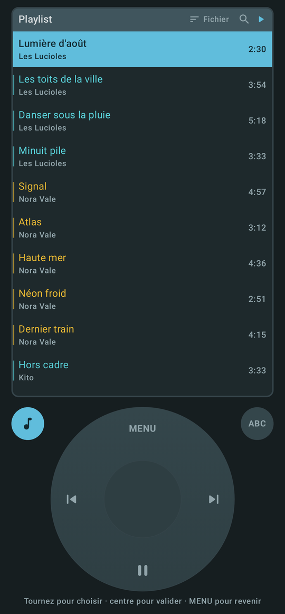
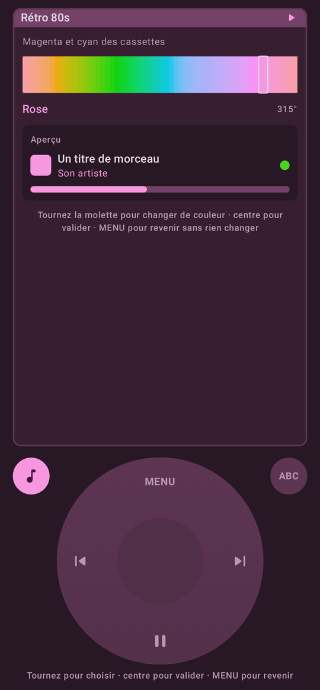
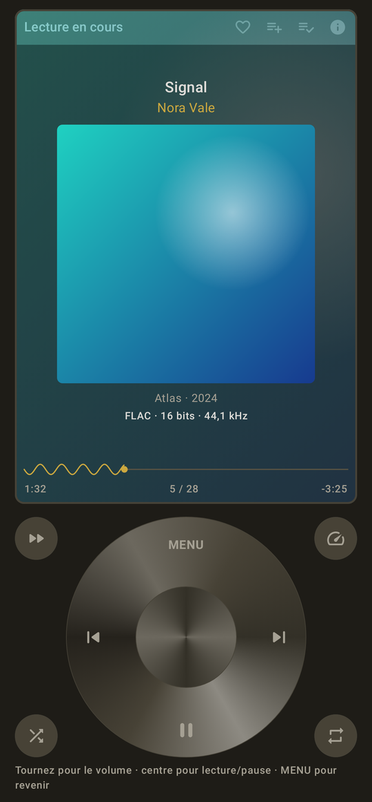
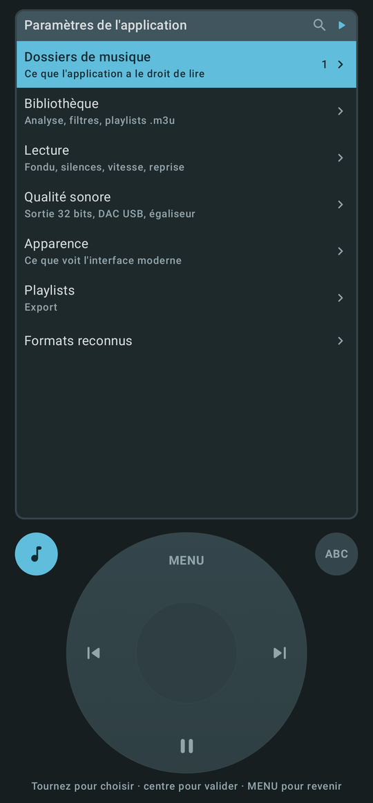
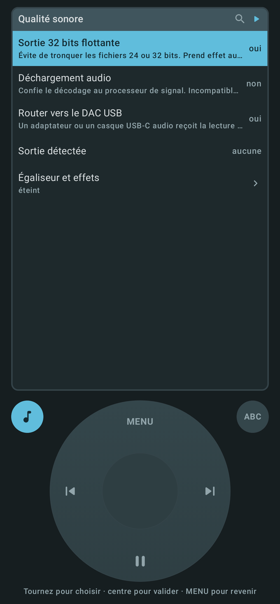

Tout se fait à la molette
Un écran, une roue cliquable, un tic sous le doigt à chaque cran. Pas de menus cachés ni de listes qui fuient sous le pouce : on tourne pour choisir, on appuie pour valider.
- Tourner — parcourt la liste, ou règle le volume pendant la lecture
- Centre — ouvre, lance, met en pause
- Appui long de 2 s — le menu d'actions : lire, ranger, déplacer, effacer
- MENU — remonte d'un niveau
- Bouton ABC — saute de lettre en lettre dans les longues listes
Le son, tel qu'il a été enregistré
Par défaut, rien ne s'interpose : décodage exact, sortie 32 bits flottante, aucun effet tant que l'égaliseur est éteint.
- Qualité réellement décodée — format, profondeur et fréquence affichés pour chaque titre, badge Hi-Res
- DAC USB — un casque ou un adaptateur USB-C reçoit la lecture directement
- ALAC intégré — un décodeur Apple Lossless embarqué, même pour les fichiers mal étiquetés
- Confort — fondu, saut des silences, vitesse de 0,5× à 2,5×, reprise exacte des longues pistes

Votre bibliothèque, rien que la vôtre
36Music ne lit que les dossiers que vous lui montrez, en mémoire interne ou sur carte SD. Rien n'est analysé avant que vous l'ayez décidé.
- Analyse avec bilan — titres ajoutés ou retirés, playlists importées, ou « Aucune modification »
- Ordre alphabétique à la française — « Éclats » et « Ça tourne » à leur lettre, pas après le Z
- Couleur de qualité — chaque ligne dit d'un coup d'œil si le fichier est sans perte
- Formats — MP3, AAC, FLAC, ALAC, WAV, AIFF, Ogg, Opus, Matroska…

Trouver en trois lettres
Une loupe dans chaque menu filtre la liste pendant que vous tapez, avec des jokers.
emi*— commence par « emi »*emi— finit par « emi »rat*emi— commence par « rat » et finit par « emi »nuit— sans étoile : contient le mot, accents et majuscules ignorés

Des playlists qui restent des fichiers
Une playlist de 36Music est un fichier .m3u8 de votre téléphone. Ce que vous y changez dans l'application est réécrit dans le fichier — les autres lecteurs le voient aussi.
- Import automatique des
.m3uet.m3u8trouvés dans vos dossiers - Tri d'un appui — ordre du fichier, titre, artiste ou date d'ajout ; la lecture suit l'ordre affiché
- Doublons respectés — retirer une ligne n'emporte pas l'autre apparition du titre
- Export et partage — M3U8, M3U ou XSPF, vers un dossier ou une autre application
Une molette à votre image
23 ambiances de couleurs en six familles, dont on choisit la teinte sur une barre parcourue à la molette. Quinze styles de roue, des effets sous le doigt, six barres de progression — et trois configurations à rappeler d'un geste.

L'ambiance « Rétro 80s » et sa barre de teintes

Molette métallique, barre ondulée, ambiance « Luxe »
Et tous les réglages, sans lâcher la roue
Dossiers, bibliothèque, lecture, qualité sonore, égaliseur complet : tout se règle à la molette. Les valeurs continues — vitesse, fondu, bandes d'égaliseur — s'ouvrent sur un cadran, et rien n'est enregistré avant l'appui central.

Paramètres de l'application

Qualité sonore et égaliseur
Rien ne quitte votre téléphone
Aucune connexion internet
36Music ne possède aucune permission réseau : Android lui interdit tout accès à internet. Rien ne peut être envoyé ni reçu — pas de compte, pas de statistiques, pas de publicité, pas de mise à jour automatique.
Aucune permission de stockage
Il ne voit que les dossiers que vous lui avez montrés, par le sélecteur d'Android.
Rien d'irréversible par surprise
Effacer un fichier ou supprimer une playlist passe toujours par une confirmation qui nomme ce qui part.
À savoir
Entièrement réalisé avec Claude
36Music a été conçu, écrit et testé de bout en bout avec Claude, l'intelligence artificielle d'Anthropic : le code, les tests, les captures de cette page et cette page elle-même.
En français uniquement
L'application, ses menus, ses messages et sa documentation n'existent qu'en français. Aucune autre langue n'est proposée.
Installer 36Music
- Téléchargez l'APK depuis la dernière version publiée.
- Ouvrez-le sur votre téléphone ; Android demande d'autoriser l'installation depuis cette source.
- Au premier lancement, choisissez le dossier où se trouve votre musique.
| Android | 8.0 ou plus récent |
|---|---|
| Internet | Aucune connexion — aucune permission réseau |
| Langue | Français uniquement |
| Réalisation | Entièrement avec Claude (IA d'Anthropic) |
| Technologies | Kotlin, Jetpack Compose, Material 3, AndroidX Media3 |
| Tests automatisés | 252, rejoués à chaque version |
| Code source | https://github.com/36txXnxTrGXgSH/36Music |